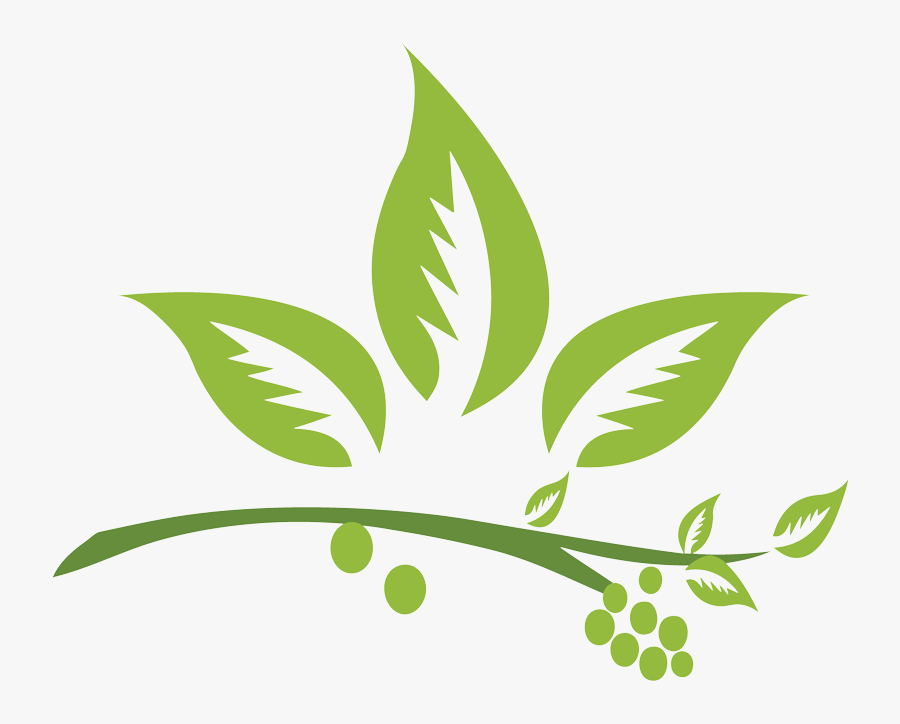

HERBS NEPAL
HOME | NEPAL HERB | NEWS/EVENT | GALLERY | CONTACT
HOME | NEPAL HERB | NEWS/EVENT | GALLERY | CONTACT
INTRODUCTION
Nepal is well known for exporting organic and Natural Herbs and Herbal Products. The credit goes to the rich blessings of nature to Nepal. However, the meaning and originality of the Nepal Herbs has been diluted in international market due to mixing of other fake products from various sources.
This has not only spoiled the Nepalese Herbal sector image but the collectors, producers, manufacturers and traders has suffered significantly as Non-Timber Forest Products (NTFPs)- mainly the Medicinal and Aromatic Plants (MAPs)contribute to income of thousands of Nepalese households across the country especially the rural areas.
So, to address the issues and authenticate the Nepali Herbal Brands a collective Trademark has been formed by three Nepali Herbal Association Jadibuti Association of Nepal (JABAN), Herbal Entrepreneurs Association of Nepal (HEAN) HEAN and Nepal Herbs and Herbal Products Association (NEHHPA) with support from government and GIZ in 2015 "Nepal Herbs". The collective logo was prepared after wider discussion and several revisions with interaction between major stakeholders including JABAN and HEAN along with concerned stakeholders including Department of Forest (DoF), Trade and Export Promotion Centre (TEPC), Department of Plant Resource (DPR) and Department of Industry (DoI).
MAPs association company members are mainly small and Medium Enterprises (SMEs) therefore, this registered collective trademark will jointly market the products of a group of NEHHPA, JABAN and HEAN company members and enhance product recognition. Collective marks may be used together with the individual trademark of the producer of a given good. This allows companies to differentiate their own products from those of competitors, while at the same time benefiting from the confidence of the consumers in products or services offered under the collective mark.
In order to obtain the "Nepal Herbs", the Herbal suppliers from Nepal have to obtain those trademark labels if their products comply with the quality and the standard set by the code of conduct prepared through the consensus decisions of the three organization involved. The code of conduct is important, because based on that the members companies of all the association will develop their products according to it. They will have to meet the code of conduct standard if they want to sell their products with "Nepal Herbs" logo. The code will be used as a reference for day to day business related to "Nepal Herbs" logo for MAPs sector. Association formulated Code of conduct will help maintain the quality of Nepali herbal products as manufacturers will have to abide by the norms.
MISSION
Act as a voice to endorse Nepal Herbal Sector for improving the living conditions of Nepalese people.
VISION
A mark representing example in regional and international market for providing original and natural herbal products. The focus is to make the world a healthier and better place to live.